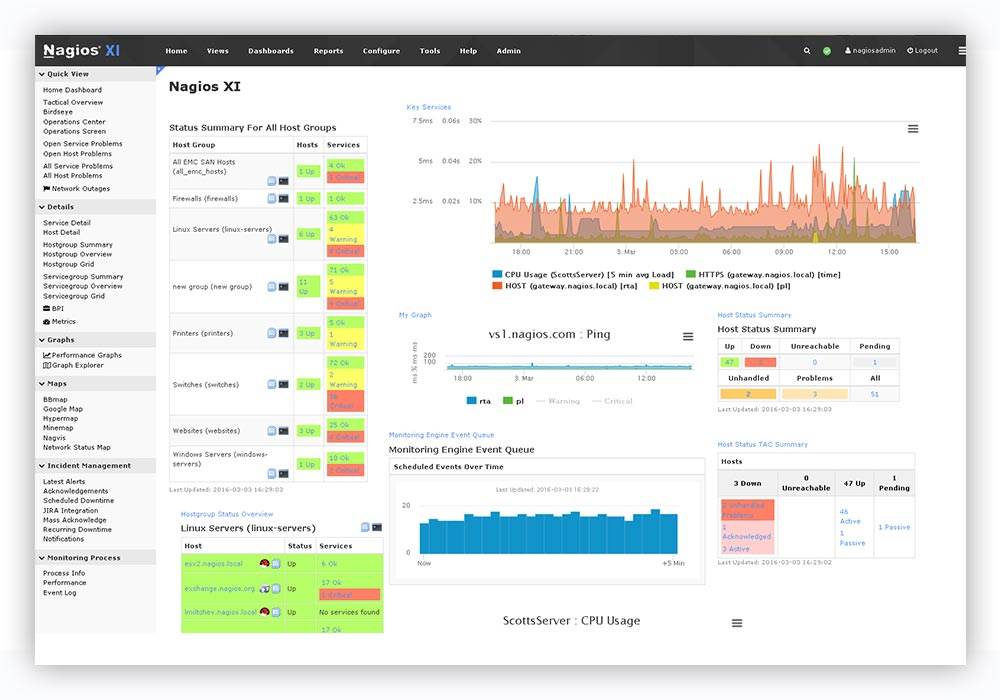
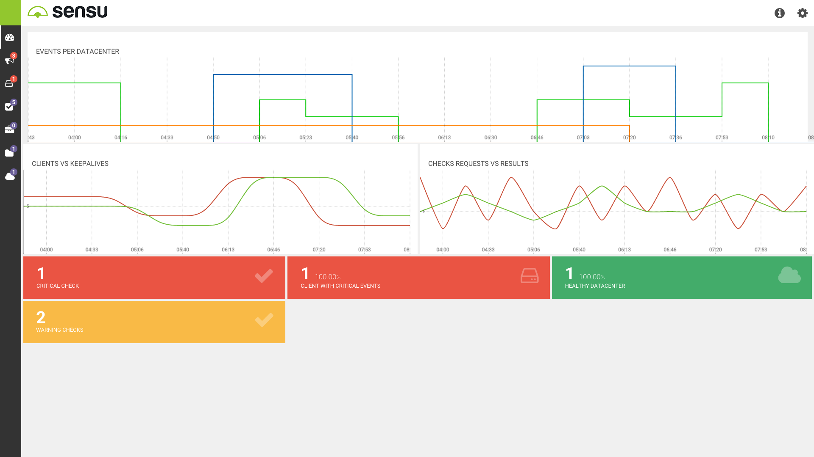
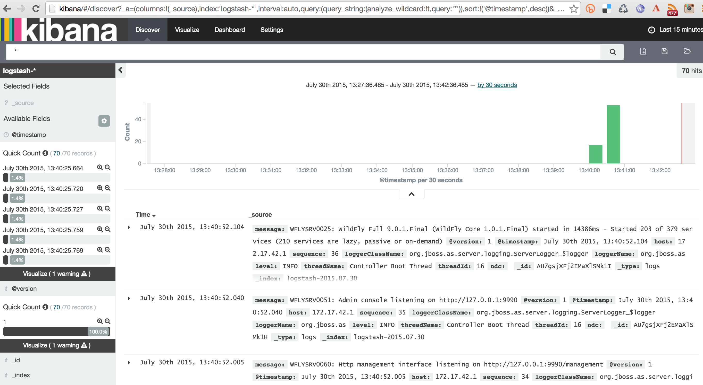

Ex: Terraform
resource "aws_instance" "web" {
ami = "ami-12345678"
instance_type = "t1.micro"
tags {
Name = "HelloWorld"
}
security_groups = [ "${aws_security_group.my_security_group.id}" ]
}
https://github.com/smakam/lampapp/blob/master/terraform/aws/main.tf
Ex: Ansible
- name: Basic Provisioning of two m3.medium EC2 instance ec2: aws_access_key: "{{ aws_id }}" aws_secret_key: "{{ aws_key }}" region: "{{ aws_region }}" image: ami-f0091d91 instance_type: m3.medium count: 2
Ex: Ansible
--- - hosts: server sudo: yes sudo_user: root tasks: - name: install mysql-server apt: name=mysql-server state=present update_cache=yes - name: install ansible dependencies apt: name=python-mysqldb state=present - name: Ensure mysql is running service: name=mysql state=started
Ex: Chef
mysql_service 'default' do port '3306' version '5.5' name 'localhost' initial_root_password 'p4ssw0rd' action [:create, :start] end mysql_config 'default' do source 'my.cnf.erb' notifies :restart, 'mysql_service[default]' action :create end
Ex: Docker
USER nginx EXPOSE 4443 WORKDIR /opt/ ENTRYPOINT ["/usr/local/bin/docker-entrypoint.sh"] CMD ["nginx", "-c", "/nginx/nginx.conf", "-g", "daemon off;"]
Alerting 
Sensu 
ELK 